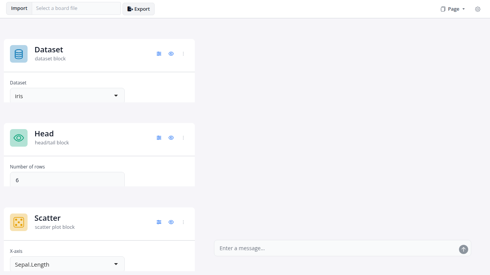

An ellmer-powered chat panel for blockr.dock boards. The assistant ships as a dock_extension that slots into the board layout like any other panel; the chat UI is built on shinychat.
Installation
You can install the development version of blockr.assistant from GitHub with:
# install.packages("pak")
pak::pak("BristolMyersSquibb/blockr.assistant")Example
Mount the assistant on a small board. The chat is wired to whichever ellmer model the board’s llm_model option resolves to (by default ellmer::chat_openai()); set the blockr.chat_function option to swap providers.
# A small pipeline wired up before the assistant mounts, so it has
# something to navigate to (not just from). Try:
#
# - "What is on the board?" -- the answer should come from the prompt's
# Board section, no tool call required.
# - "What is the unique value of `Species` in the data block?" -- the
# model should call `query_data(code = "unique(data$Species)")`.
# - "Add a scatter plot of Sepal.Length vs Petal.Length grouped by
# Species" -- the model stages add_block (and add_link) calls; flush
# happens at turn end.
# - "Rename `head` to `top_rows`" -- the model declines the in-place
# rename and offers remove + add, triggered by the id-immutability
# paragraph in the default prompt's intro (no tool call needed).
library(blockr.core)
library(blockr.dock)
library(blockr.assistant)
board <- new_dock_board(
blocks = c(
data = new_dataset_block("iris"),
filt = new_subset_block(subset = "Sepal.Length > 5"),
head = new_head_block(n = 10L),
plot = new_scatter_block(x = "Sepal.Length", y = "Sepal.Width")
),
links = c(
new_link("data", "filt", "data"),
new_link("filt", "head", "data"),
new_link("filt", "plot", "data")
),
stacks = c(
prep = new_stack(c("data", "filt"), name = "Prep"),
display = new_stack(c("head", "plot"), name = "Display")
),
extensions = list(assistant = new_assistant_extension()),
layout = list(
list("data", "filt", "head", "plot"),
"assistant"
)
)
serve(board)
Status
The assistant is feature-complete for the initial roadmap: read tools (list_blocks, describe_block, query_data, …), mutation tools (add_block, modify_block, …) flushed atomically per turn, and a system prompt refreshed on every materialized board change so the model always sees the current shape of the board.
See the roadmap for the staged plan and the per-phase design notes for what was shipped in each phase.